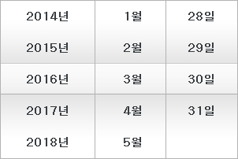
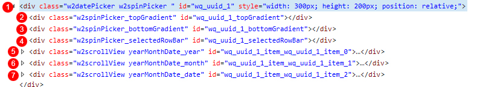

14.DatePicker
수정 일자 버전 (SP2)
WebSquare5 Studio : 20180117_1349_x86_B
WebSquare5 Engine : 5.0_2.2982B.20180223.154326_1.5
모바일 전용 컴포넌트로 Calendar 컴포넌트와 InputCalendar 컴포넌트의 대체로 사용합니다. 터치나 드래그 이벤트를 통해 날짜값을 선택할수 있습니다.
14.1Property
Property | Description |
|---|---|
ampm | calendarValueType속성이 yearMonthDateTime인 경우 오전, 오후에 해당하는 문자열을 ,로 구분하여 작성합니다. |
calendarValueType | 날짜표시 형식을 지정합니다. |
class | 사용자가 임의의 class를 정의할때 사용합니다. |
dateSuffix | [default:일]일(date)에 해당하는 숫자 뒤에 설정할 문자열을 지정합니다. |
id | 사용자가 임의의 id를 정의할때 사용합니다. |
monthNames | 월에 해당하는 숫자를 대체할 문자열로 ,로 구분하여 작성합니다. |
ref | DataCollection의 value 경로로 컴포넌트와 DataCollection의 value를 binding을 시킬 때 사용하며 "data:"라는 prefix는 필수로 붙여주어야 합니다. |
tabIndex SP2 | Tab Key를 이용 한 컴포넌트의 포커스 순서로 HTML의 tabindex속성과 동일한 기능을 제공한다. |
title | 일반적인 tag의 title 입니다. |
yearSuffix | [default:년]연도(year)에 해당하는 숫자 뒤에 설정할 문자열로 빈값을 넣을 경우 $blank를 사용합니다. |
14.2브라우저 캡쳐화면

[그림 14-1]01
14.3CSS Overriding

[그림 14-2]02
No | Class | Description |
|---|---|---|
1 | w2datePicker, w2spinPicker | w2datePicker, w2spinPicker 는 웹스퀘어 엔진에서 정의된 클래스입니다, 기본적으로 html 로 떨구는 시점에서 자동으로 부여됩니다. |
2 | w2spinPicker_topGradient | w2spinPicker_topGradient는 웹스퀘어 엔진에서 정의된 클래스입니다, 기본적으로 html 로 떨구는 시점에서 자동으로 부여됩니다.DatePicker의 상단 그라디언트 배경의 공간입니다. |
3 | w2spinPicker_bottomGradient | w2spinPicker_bottomGradient는 웹스퀘어 엔진에서 정의된 클래스입니다, 기본적으로 html 로 떨구는 시점에서 자동으로 부여됩니다.DatePicker의 하단 그라디언트 배경의 공간입니다. |
4 | w2spinPicker_selectedRowBar | w2spinPicker_selectedRowBar는 웹스퀘어 엔진에서 정의된 클래스입니다, 기본적으로 html 로 떨구는 시점에서 자동으로 부여됩니다.DatePicker의 선택된 부분의 배경색 공간입니다. |
5 | w2scrollView, yearMonthDate_year | w2scrollView, yearMonthDate_year는 웹스퀘어 엔진에서 정의된 클래스입니다, 기본적으로 html 로 떨구는 시점에서 자동으로 부여됩니다.DatePicker의 년도 부분의 세로줄 공간입니다. |
6 | w2scrollView, yearMonthDate_month | w2scrollView, yearMonthDate_month는 웹스퀘어 엔진에서 정의된 클래스입니다, 기본적으로 html 로 떨구는 시점에서 자동으로 부여됩니다.DatePicker의 월 부분의 세로줄 공간입니다. |
7 | w2scrollView, yearMonthDate_date | w2scrollView, yearMonthDate_date는 웹스퀘어 엔진에서 정의된 클래스입니다, 기본적으로 html 로 떨구는 시점에서 자동으로 부여됩니다.DatePicker의 일 부분의 세로줄 공간입니다. |
14.4주의사항 및 Tip
일반적으로 모바일 환경에 적합한 ui입니다. 주로 버튼을 누르면 해당 컴포넌트가 보여지고 선택을 하면 선택값을 넘기는 식으로 구성합니다.